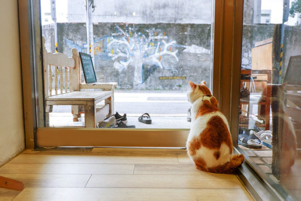
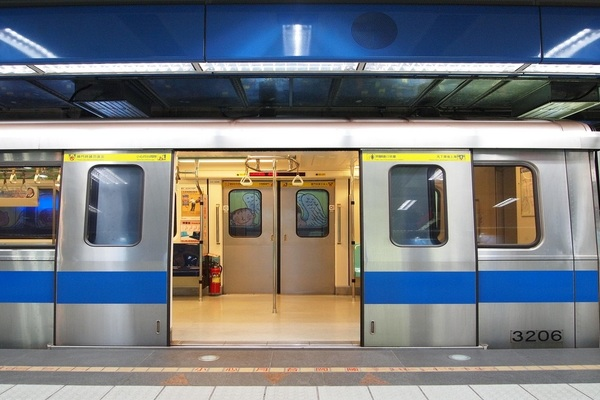

我們與這個網站的成立
身為貓咪愛好者的我們，在選擇主題時便毫不猶豫地決定以貓咪咖啡廳為主題了。
藉由製作這個網站，由我們來向大家介紹一些位在捷運站附近的貓咖，讓對此有興趣的大家可以透過捷運去拜訪這些地方。

預期的成效
希望透過這個網站，能夠讓大家瞭解到在這些捷運站附近有這些貓咖，而透過便利的捷運更是能輕鬆地抵達這些地點，以提升人們去拜訪的意願。
希望這樣能使更多人認識貓咖，讓喜歡貓咪的我們可以為牠們盡上一份心力。
團隊與工作分配
主要分成兩部分 : 文本製作與網頁設計

錢昀亭 Yung Ting Chien
負責文本製作與撰寫的工作。
曾拜訪店家的經驗皆由她所寫，整理並總匯龐大的資料。
曾拜訪店家的經驗皆由她所寫，整理並總匯龐大的資料。
羅凡妤 Fan Yu Lo
負責網頁設計與架設的工作。
整個網站的架設皆由她負責，將整理好的文本應用在各個頁面上。
整個網站的架設皆由她負責，將整理好的文本應用在各個頁面上。